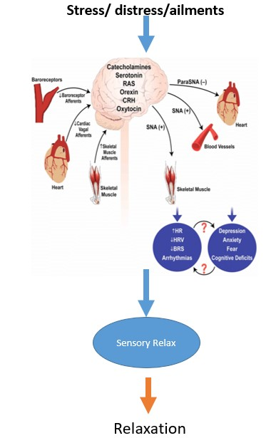

Our Solution
Biofeedback is a technique you can use to learn to control some of your body's functions, such as your heart rate. During biofeedback, you're connected to electrical sensors that help you receive information about your body.
Brain waves; Breathing; Heart rate; Muscle contraction; Sweat gland activity; Temperature
Ecotherapy is based on the idea that people are connected to and impacted by the natural environment, this enables one to experience a sense of positive ness and also enables one to recover quickly from psychological stress. Studies have identified the exposure to nature images and sounds have shown reduction in stress, pain and anxiety.

Our Innovation